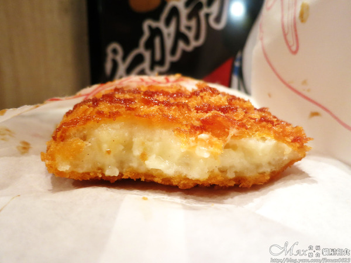
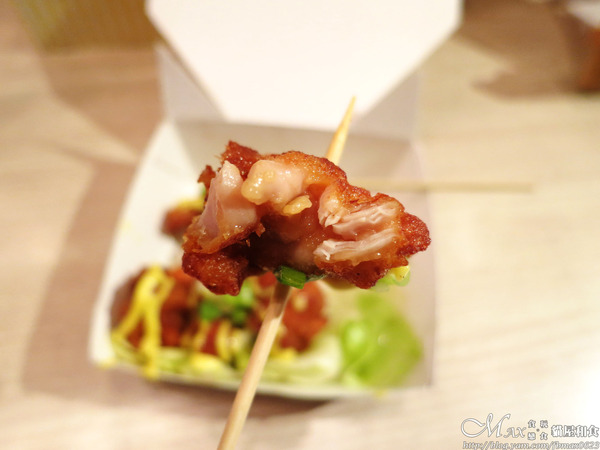

上星期六去了一趟雲林虎尾、斗六美食之旅，收獲滿滿。 而我也終於如願去到超想去的「斗六市人文夜市」。
而因為前幾站已很飽，來到這夜市就主攻在地好友推薦「貓屋和食」。 聽到名字是不是覺得很可愛，主要就賣北海道可樂餅和日本炸雞。 除了可樂餅外、炸粉和豬排醬等也都從日本原裝進口的。
日本炸雞有三種佐醬，大小則是中及大份的選擇。 北海道可樂餅共三種口味，原味、咖哩和卡門伯特乳酪。

貓屋和食的可樂餅是真的從北海道進口，因為曾在台中吃過原味和咖哩。 這次就換卡門伯特乳酪嚐嚐，我個人也是起司控呢！好像什麼都愛XD
可樂餅現炸好後，淋上豬排醬。 內餡除了馬鈴薯，還吃的到濃郁的乳酪。 對這口味很喜歡，起司跟馬鈴薯真搭。
使用去骨的雞腿肉，裏上日本進口的炸粉。 底下鋪上生菜，淋上蜂蜜芥末醬、再灑點蔥。

剛炸好的炸雞外皮酥脆，雞肉還保有鮮嫩多汁。 蜂蜜芥末完全不會去搶味，蔥的香氣很明顯。 明明肚子已有點飽，但還是讓人一塊接一塊，好美味。 與底下的生菜一起享用，也相當解油膩，難怪是人氣口味。
最後附上貓屋和食的出沒地點。 每天的攤位地點不一樣，別跑錯地方啦！
引自:http://blog.yam.com/fbmax0623/article/90273706